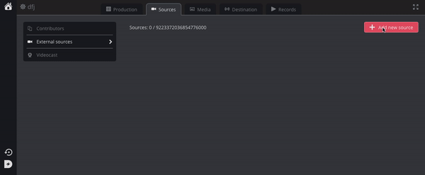

Ingest your GoPro into your Dazzl Live Platform
Their is only few models of GoPros which can be used to livestream, which are the following :
- The GoPro MAX
- The HERO8 Black
- The HERO7 Black
If you have one of these cameras and linked it to the GoPro application, you can use it to livestream by following these steps:
- Go into you Dazzl Account. Create a new channel, and add a new external source using this article.

- Once you have your RTMP address and key, return to the GoPro app and select Live from preview mode.
- Tap the Facebook icon to change your platform and select Other.
- Tap Set Up Live and enter or paste your RTMP address and key in the required field.
- Choose your preferred resolution: 480p, 720p or 1080p (1080p only available with HERO8 Black).
- Choose your save settings (you can save a high-res version of your stream to your SD card).
- Tap Go Live or press the Shutter button to start streaming.